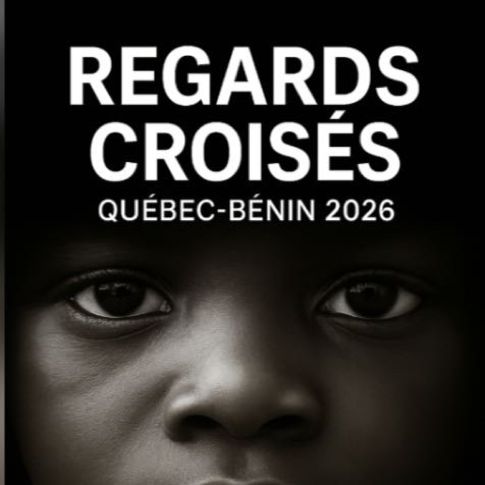

Expositions, résidences, livres
- 23 – 25 oct. 2026
Foire · ParisAKAA, Also Known As Africa
Mes œuvres sont présentées à AKAA, la foire d'art contemporain et de design centrée sur l'Afrique.

- À partir du 21 oct. 2026
Résidence · Bénin et QuébecRegards Croisés Québec-Bénin, avec l'Afro-Musée de Montréal
Je fais partie des six artistes béninois sélectionnés pour cette résidence internationale qui réunit dix artistes du Bénin et du Québec. Elle est organisée par l'Afro-Musée de Montréal avec Le Monde de Sica et Femme & Pouvoir TV. L'acte 1 se déroule à Cotonou et Abomey-Calavi, la suite à Montréal en 2027.

- 15 – 31 oct. 2026
Exposition · ParisLes 5 ans du Prix Ellipse
62 rue Charlot, Paris. Vernissage le 14 octobre, de 18h30 à 21h. Œuvres présentées : Zangbéto IV, V et VI.

- Sept. 2026
Résidence · FranceRésidence Odyssée à la Saline royale d'Arc-et-Senans
Trois semaines de recherche sur l'architecture de Claude-Nicolas Ledoux, sur un site inscrit au patrimoine mondial de l'UNESCO. Le projet Vestiges Sacrés rassemble trente-cinq œuvres.

- 16 sept. 2026
Conférence · États-UnisRencontre avec l'artiste, Saint Joseph's University
« Photographie contemporaine, Vodun et mémoire béninoise », Philadelphie.
- 2026
LivrePrésences, premier livre en préparation
Le livre réunira Mouvement Sacré des Âmes, Zangbéto, Nature Divinité et Vibration Côtière. Publication à venir.

- 2026
Installation · CotonouSix œuvres à la Polyclinique Les Cocotiers
Six œuvres créées pour la Polyclinique Les Cocotiers et installées de façon permanente, ainsi que des fresques peintes par Global Street Art à partir de mes photographies.

- Déc. 2025
Exposition · DakarECOFEST, Galerie nationale de Dakar
Mouvement Sacré des Âmes représente le Bénin au festival ECOFEST, au Sénégal.

- Juin – juil. 2024
Prix · CotonouFinaliste du Prix Ellipse 2024
Exposition des cinq finalistes à la Maison Rouge, à Cotonou, avec Mouvement Sacré des Âmes.

Inviter l'artiste
Pour une exposition, une résidence, une conférence ou un atelier, écrivez-moi.